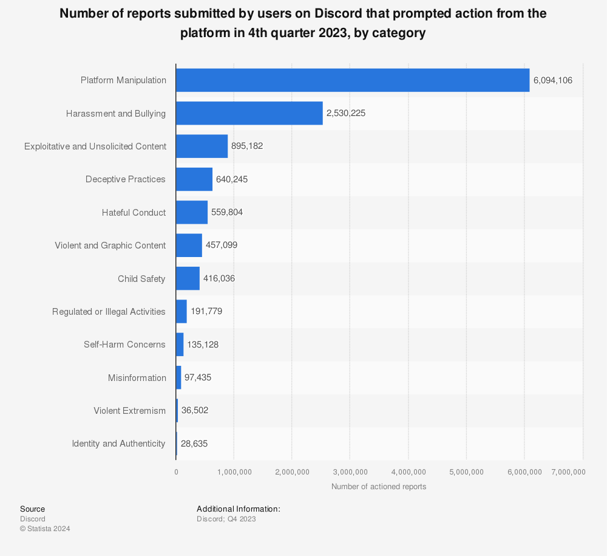

The person in the online chat introduced himself as “Brad.” Using flattery and guile, he persuaded the 14-year-old girl to send a nude photo. It instantly became leverage.
Over the following two weeks in April 2021, he and other online predators threatened to send the image to the girl’s classmates in Oklahoma unless she live-streamed degrading and violent acts, the girl’s mother told The Washington Post.


They coerced her into carving their screen names deep into her thigh, drinking from a toilet bowl and beheading a pet hamster — all as they watched in a video chatroom on the social media platform Discord.
The pressure escalated until she faced one final demand: to kill herself on camera.
“You just don’t realize how quickly it can happen,” said the mother, who intervened before her daughter could act on the final demand. The mother agreed to talk about the experience to warn other parents but did so on the condition of anonymity out of concern for her daughter’s safety.
The abusers were part of an emerging international network of online groups that have targeted thousands of children with a sadistic form of social media terror that authorities and technology companies have struggled to control, according to an examination by The Washington Post, Wired Magazine, Der Spiegel in Germany and Recorder in Romania.
The perpetrators — identified by authorities as boys and men as old as mid-40s — seek out children with mental health issues and blackmail them into hurting themselves on camera, the examination found. They belong to a set of evolving online groups, some of which have thousands of members, that often splinter and take on new names but have overlapping membership and use the same tactics.
Unlike many “sextortion” schemes that seek money or increasingly graphic images, these perpetrators are chasing notoriety in a community that glorifies cruelty, victims and law enforcement officials say. The FBI issued a public warning in September identifying eight such groups that target minors between the ages of 8 and 17, seeking to harm them for the members’ “own entertainment or their own sense of fame.”

The group that targeted the Oklahoma girl and others interviewed for this report is called “764,” named after the partial Zip code of the teenager who created it in 2021. Its activities fit the definition of domestic terrorism, the FBI recently argued in court.
“I had the feeling that they really loved me, that they cared about me,” said an 18-year-old woman from Canada who described being “brainwashed” and then victimized by the group in 2021. “The more content they had of you, the more that they used it, the more that they started to hate you.”
While lawmakers, regulators and social media critics have long scrutinized how Facebook and Instagram can harm children, this new network thrives on Discord and the messaging app Telegram — platforms that the group 764 has used as “vessels to desensitize vulnerable populations” so they might be manipulated, a federal prosecutor said in court recently.
Discord, a hub for gamers, is one of the most popular social media platforms among teens and is growing fast. The platform allows anonymous users to control and moderate large swaths of its private meeting rooms with little oversight.
Telegram — an app that includes group chats and has more than 800 million monthly users — allows for fully encrypted communication, a feature that protects privacy but makes moderation more challenging. Telegram delegates most moderation to leaders of groups on the platform, intervening in some instances when posts violate its policies.
On Telegram, members of these groups post child pornography, videos of corpse desecration and images of the cuts they have made children inflict on themselves, according to victims and an examination of messages. In chat groups with as many as 5,000 members, they brag about their abusive acts and goad each other on. They share tips on where to find girls with eating disorders and other vulnerabilities congregating online, and on how to manipulate them.
In a group chat on Telegram this past April, one such member wrote that he had obtained an 18-minute video of a minor engaging in sexual acts. He wrote that she was “the 14th girl this month.”
The platforms say deterring these groups is an urgent priority. But after creating the spaces that predators from around the globe use to connect with one another and find vulnerable children, even removing thousands of accounts each month has proved insufficient. The targeted users start new accounts and swiftly reconvene, according to interviews with victims.
In a statement, Telegram did not respond to detailed questions about this network but said it removes “millions” of pieces of harmful content each day through “proactive monitoring of public parts of the platform and user reports.”
“Child abuse and calls to violence are explicitly forbidden by Telegram’s terms of service,” said Remi Vaughn, a Telegram spokesperson. “Telegram has moderated harmful content on our platform since its creation.”
After reporters sought comment, Telegram shut down dozens of groups the consortium identified as communication hubs for the network.
Discord has filed “many hundreds” of reports about 764 with law enforcement authorities, according to a company spokeswoman, speaking on the condition of anonymity for fear of retaliation from 764-affiliated groups. The company removed 34,000 user accounts associated with the group last year, many of them assumed to be repeat offenders, she said.
“It’s their responsibility to provide a safe space for everyone.” — Mother of a 764 victim in Oklahoma, referring to Discord
“The actions of 764 are appalling and have no place on Discord or in society,” the company said in a statement. “Since 2021, when Discord first became aware of 764, disrupting the group and its sadistic activity has been among our Safety team’s highest priorities. Discord has specialized groups who focus on combating this decentralized network of internet users, and 764 has and continues to be a target of their daily work.”
The company uses artificial intelligence to detect predatory behavior and scans for abusive text and known sexually explicit images of children in the platform’s public spaces, the spokeswoman said. It shuts down problem accounts and meeting spaces and sometimes bans users with a particular IP address, email or phone number, though the spokeswoman acknowledged that sophisticated users can sometimes evade these measures.
The Post and its media partners shared reporting for this examination, including court and police records from multiple countries, and interviews with researchers, law enforcement officials and seven victims or their families — all of whom spoke on the condition of anonymity to protect their safety — in North America and Europe. The media consortium also collected and analyzed 3 million Telegram messages. Each news organization wrote its own story.
The Oklahoma girl’s mother said she holds Discord responsible for her daughter’s abuse, detailed in videos and police records.
“Discord has provided a safe space for evil people,” the mother said. “It’s their responsibility to provide a safe space for everyone.”
A cult that prizes sadistic acts
The founder of 764 was a 16-year-old boy in Texas who used variations of the screen names “Felix” or “Brad” while running the group’s online operations from his mother’s home. Bradley Cadenhead soon developed a following online as the leader of a self-described cult that prized sadistic acts, according to court records that describe both his online and real-world lives.
Cadenhead became fascinated with violent imagery at age 10, the records say. Three years later, he was sent to a juvenile detention center after allegedly threatening to shoot up his school.
He created the first 764 Discord server in January 2021, according to the company spokeswoman. Discord servers are meeting spaces where members gather to communicate with each other by text, voice and video. The person who creates a server controls who is admitted to it and who moderates its content.
The group’s name refers to the first three numbers in the Zip code of Cadenhead’s hometown, Stephenville, about 100 miles southwest of Dallas, said Stephenville Police Capt. Jeremy Lanier.
Court and police records show that Discord struggled to keep Cadenhead off its platform.
Starting in November 2020, the company spokeswoman said, Discord noticed that child sexual abuse material was being uploaded from IP addresses — a set of numbers that identify a device used to connect to the internet — that investigators later traced back to Cadenhead. The company sent authorities reports about illegal images on 58 different accounts operated by Cadenhead, well into 2021, the spokeswoman said.
Lanier told The Post that Cadenhead was uploading child pornography on Discord as late as July 2021, several months after the Oklahoma girl was groomed and abused there.
The Discord spokeswoman said that each time one of Cadenhead’s accounts was flagged, it was shut down and banned. She acknowledged that the company banned only some of the IP addresses used by Cadenhead, saying that it used such bans only when they were deemed tactically appropriate. She said sophisticated predators often have 50 to 100 accounts, some stolen or purchased, to evade enforcement actions.
The reports from Discord prompted the investigation that led to his arrest on child pornography charges in July 2021. Speaking later to a juvenile probation officer, Cadenhead said that his server attracted as many as 400 members who routinely posted shocking images, including videos of torture and child pornography. It was also “quite common” for members to groom victims and extort them by threatening to distribute compromising images, Cadenhead told the officer. Sometimes their motivation was money, and other times they did it “just for power,” the officer wrote in a report to the court after Cadenhead pleaded guilty.
Cadenhead, now 18 and serving an 80-year prison sentence for possession with intent to promote child pornography, did not respond to a letter requesting an interview. His parents did not return messages. Chris Perri, a lawyer for Cadenhead, said he may challenge the sentence based on “potential mental health issues.”
Lanier said that in six years of investigating child pornography cases he had “never seen anything as dark as this. Not even close.”
‘What did they want you to do’

The Oklahoma teenager’s experience with 764 started innocuously, her mother said in an interview. The girl downloaded the Discord app on her phone because her middle school art teacher encouraged students to use it to share their work. A fan of horror stories, she soon began searching for gory content.
She landed in a chatroom where she met “Brad,” who flattered her and invited her to the 764 server. The 14-year-old was typical of children victimized by these groups: She had a history of mental illness, having been hospitalized for depression the previous November, her mother said.
“He pretended to like her as a girlfriend,” the mother said. “She sent him videos or pictures. And then the manipulation and control started. ”
For more than two weeks, the girl complied with the demands of a handful of abusers in the 764 server, live-streaming some videos from inside her bedroom closet while her mother was in the house, according to her mother. They told the girl that if she didn’t comply they would send explicit photos of her to her social media followers, classmates and school principal. They threatened to hurt her younger brother.
The Post reviewed a video of the girl that was still circulating on Telegram late last year, a recording of a live stream on the 764 Discord server. The girl holds the family’s hamster in one hand and a razor blade in the other as three males berate her. “Bite the head off, or I’ll f--- up your life,” a male with the screen name “Felix” yells, as she sobs. “Stop crying,” says another male.
“People are not understanding the severity, the speed at which their children can become victimized.” — Abbigail Beccaccio, chief of the FBI’s Child Exploitation Operational Unit
The girl’s mother said in an interview that “Brad” coerced her daughter into killing the hamster. The victim from Canada said she was in the Discord server at the time and confirmed that the 764 leader pressured the girl into mutilating the animal as dozens of people watched online.
The girl’s mother found out about the extortion later that same night in April 2021.
She heard the muffled sound of her daughter’s voice through the bathroom door, talking to someone as she bathed. She waited by the door until her daughter opened it. On her daughter’s torso were self-inflicted cuts the abusers had told her to make while she was in the bathtub, the mother said.
The girl told her mother that a cult was extorting her and that she had been instructed to take her own life the following day.
“I believe she was going to kill herself,” the mother said. “If I had not been at that bathroom door, I have no doubt I would have lost my daughter.”
The mother struggled to understand the depravity.
“What did they want you to do?” she asked later, in a text message to her daughter.
“Cut their names,” her daughter answered. “Cut until the bath was red. Lick a knife with blood.”
The mother shut off the teen’s contact with the group and spoke with local police, but harassment followed, records show. The principal at the girl’s middle school received multiple anonymous calls saying the girl had strangled cats and harmed herself, according to a police report obtained by The Post. The group also “swatted” the family, falsely reporting an emergency at the house that prompted police to respond, the mother said.
The investigation by police in the Oklahoma town never identified the girl’s online abusers, police records show, with a detective noting a handful of Discord screen names of the suspects, including “Brad.”
Moderators struggle as the network grows
In the nearly three years since, the network has grown and reports of abuse have risen, posing a challenge to social media platforms.
Abbigail Beccaccio, chief of the FBI’s Child Exploitation Operational Unit, estimated that thousands of children have been targeted by the online groups using these tactics, although she declined to discuss any groups by name.
“People are not understanding the severity, the speed at which their children can become victimized,” she said. “These are offenders that have the ability to change your child’s life in a matter of minutes.”
A nonprofit that directs reports of abuse against children from social media companies to law enforcement said it saw a sharp increase in this type of exploitation last year. Fallon McNulty, director of the CyberTipline at the National Center for Missing and Exploited Children, said the center received hundreds of reports of minors extorted into hurting themselves last year and continues to receive dozens each month.
These online groups, she said, are responsible for “some of the most egregious online enticement reports that we’re seeing in terms of what these children are being coerced to do.”
A 13-year-old girl in England said she witnessed a young man hang himself on the 764 server last January. The 18-year-old Canadian said she watched a male shoot himself in the head on a Discord live stream.
“They wanted you in the groups and they were going to ridicule you and drive you to suicide,” the Canadian said.
The Discord spokeswoman said the company is assisting law enforcement in an investigation of the incident described by the Canadian woman. The spokeswoman declined to comment on the incident described by the girl in England or say how many suicides on the platform have been linked to 764.
Although the FBI could not say how many deaths are attributable to this network, the agency said at least 20 children died by suicide in the United States as a result of being extorted with nude images between October 2021 and March 2023.
The Discord spokeswoman said the company met with the FBI in 2021 after learning about the existence of 764 on its platform. She declined to provide details about the meeting but said the FBI was not aware of the group at the time.
The FBI’s first public mention of 764 was the warning it issued in September. The bureau declined to comment on any steps it took to investigate the group after the 2021 meeting.
Discord said it has worked to rid the platform of the group’s members, dedicating senior officials on its safety team specifically to targeting the group.
“We proactively detect, remove, and ban related servers, accounts, and users,” the company said in a statement. “We will continue working relentlessly to keep this group off our platform and to assist in the continued capture and prosecution of these violent actors.”
Victims said in interviews that when Discord’s moderators took down servers and banned accounts, users would simply create new ones.
“The 764 Discord groups [would] keep getting taken down. They [would] bring them back up, and then they take it down and they bring it back up. It’s a cycle that keeps repeating,” said the 18-year-old from Canada.
Even though she was a victim, she said her Discord accounts were regularly banned because she was in servers that contained violent imagery. She estimated that she created 50 to 100 different Discord accounts with new identifying information each time. “I kept getting deleted, and I just kept making more new emails, new phone numbers, all of the above,” she said.
A killing in Romania in 2022 illustrates users’ ability to get around bans. A 764 member who went by the screen names “tobbz” and “voices” fatally stabbed an elderly woman on a Discord live stream that April. Months earlier, Discord had shut down one of his accounts and reported him to authorities, the spokeswoman said, but he managed to remain on the platform.
The attacker, a German teenager whose name has not been released by authorities because he was a minor, was convicted of murder and sentenced to 14 years in prison. “I committed the crime just to provide content within the group,” he told Romanian investigators, referring to a 764 affiliate.
The Discord groups often have parallel channels on Telegram, where members exchange tips on how to avoid Discord bans and groom victims. They boast about their exploitation, posting photos of victims’ with their screen names cut into their bodies.
They also share screenshots of their exchanges with victims, such as one posted to a Telegram channel in January.

A how-to guide circulated on Telegram offers tips on how to groom girls who are “emotionally weak/vulnerable.”
“Gain her trust, make her feel comfortable doing anything for you, make her want to cut for you by getting to her emotions and making it seem like youre the only person she could ever need in her life,” it advises.
Another guide advises targeting girls who have eating disorders or bipolar disorder.
The Post and its partners also found several video recordings on Telegram of victims being abused on Discord, including the Oklahoma girl and others who had carved usernames and group names into their bodies. Some users on Telegram noted that Discord had stepped up its enforcement in the past year and said that it was more difficult to stay on the platform.
There were also comments about recruiting victims on Roblox, a gaming platform popular with young children.
“I groomed him on Roblox,” a user wrote in May 2023. “Told him to mic up. Then started grooming him”
A Roblox spokesperson said the platform is aware of the groups’ activities.
“Fortunately, these crime rings and organizations represent a small number of users, but they evolve their tactics in an attempt to evade our detection by relying on coded messages and avoid violation of Roblox policies. Our sophisticated systems and teams are extremely vigilant in looking for imagery, language or behavior associated with them.”
Experts said social media companies have little financial incentive to eliminate child abuse under the current law, which shields them from liability for content posted on their platforms.
“When you create liability for these companies, they have to absorb it,” said Hany Farid, a computer science professor at the University of California at Berkeley. “When they absorb it, they make different decisions because the economics change.”
‘Tired of living in fear’
In recent months, there have been signs that the FBI is ramping up its investigations into the network of related groups, starting with the public warning in September.
Between October and January, federal prosecutors in court documents identified three men facing child pornography charges as members or associates of 764.
Federal authorities have also begun examining 764’s imprisoned founder. In November, the FBI asked Stephenville police to share the information they had collected during their investigation of Cadenhead two years earlier, according to Lanier, the police captain. The following month, the mother of the girl in Oklahoma said, FBI agents contacted her and asked her to recount the details of the abuse. She said she was not told why the FBI was interested in the case. The FBI declined to comment.
The criminal case that led to Cadenhead’s imprisonment did not include charges for abusing the Oklahoma girl, and the girl’s mother said she was not notified of his arrest.
For years, not knowing the identity of her daughter’s tormentors has left the mother fearful of what they might do next. She was relieved last month when a Post reporter told her about Cadenhead’s arrest.
“I’m tired of living in fear,” she said.
Her daughter, now 17, has been in and out of mental health institutions in the past few years, she said. She has found a measure of stability since undergoing trauma therapy for the online abuse, the mother said.
But a reminder remains: a scar — the number 764 — is still visible on her thigh.